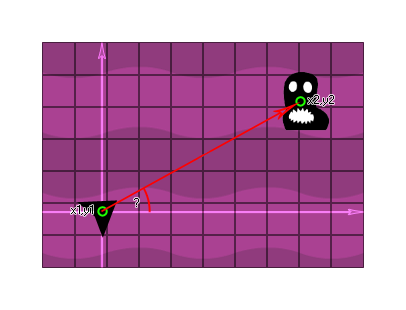
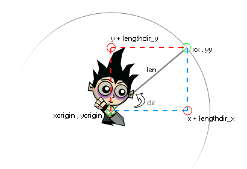

Blog Posts
Creating a space arcade game in "Game Maker Studio 2" | Part 1"
As someone who studies Software Engineering my main area of expertise is application development, when I have the time for it I also like to delve into the world of game development. This blog post covers some things I learned during the development of creating a space combat game.
In this blog you can read about the design principles I followed, how I tackled problems along the way and how I created some of the core mechanics for the game.
Features
This game is not very realistic. Instead it is more of a step towards an arcade game. A couple of features have been implemented that make the game a bit more chaotic. The player's spaceship slows down fairly quickly, the player can change direction anywhere in his flight, the player can take down enemy ships and there are allied ships that fight alongside the player, to name a few.
During the development that took place over a timespan of multiple months (Usually I worked on the project a few hours a week) I added a lot of new features. In order to do this effectively I learned a lot about how to go about setting up a project like this, what to keep in mind and how to prevent having to rewrite major chunks of code.
Setting up the project
I learned the hard way that you should give at least some thought to how you are going to setup your project, even if it is pretty small you might decide later on that you want to expand it. if you do not plan or use design principles the odds are pretty big that you will have to rewrite parts of your code later on, by which point you probably won't remember what any of it does. Sounds familiar? Here are a few tips:
- Don't use magic numbers. Code can get quite confusing when you don't remember what those silly numbers do, assign your numbers to a variable first, give it a clear name so you still know what the value means a week, a month or a year from now, (hopefully) you will be able to thank your past self!
- It is almost always a good idea to create a base class for an enemy, you can make all other types of enemies children of the base class. A lot of mechanics can be created with the base class without having to bother with each enemy object individually. Imagine having to change combat behaviour in every enemy because you decided that they should not be flying directly towards the player after all! You can avoid a lot of code duplication and it makes your code a lot easier to expand!
- It's not a good idea to rush through features just for the sake of finishing them. The chances that you are going to edit mechanics are virtually always present. If the code was badly written to begin with, chances are you have to rewrite it due to bugs, performance, new features, etc.
The player
The player has a spaceship that has it's own unique mechanics. As we saw in the previous image the player also utilizes the "blue_fighter" class because, like the other blue ships the player is a type of blue ship. Some examples as to why this is useful will be discussed in a moment; however, lets first take a look at the player!
The player has a bunch of variables, some important ones are summed up below:
Instance variables: These variables can be accessed through any script in the player object and exist for as long as the object that contains them:
- armor (health): A number that indicates the player's health (in this case a whole number/integer).
- return_room: A boolean that indicates whether the player should leave the "room" and return to the menu.
- alarm_triggered: A boolean that checks whether an "alarm" (timer) has been triggered.
- hyperspeed: Determines whether the player is in "hyperspeed"
- decal_count: A counter that checks how many active instances of decals/particles there are, to make sure it does not eat up performance.
An image of some instance variables.
Local variables: These variables reset every time the script is executed, for example, a variable can reset to a default value every frame.
- _mouse_direction: Returns an angle in degrees using the point_direction(x1,y1,x2,y2) function which returns the direction of a vector in relation to the fixed x/y coordinates of the room.
- _thrust: Checks if the right mouse button is pressed.
- _angle_difference: The difference between the angle of the image and the direction in which the player aims the mouse.
- _offset: An amount anywhere between -4 and 4 to create a random offset for the engine particle (not an integer).
- _length: 16, exactly half the width of the image of the player's ship to draw the engine particle at the correct location.
- _x: The x position at which an engine particle effect is drawn.
- _y: The y position at which an engine particle effect is drawn.
In game maker it is considered a good habit to prefix every local variable with "_".
Built-in variables: A special type of variable that are utilized by Game Maker to address certain functionalities, such a a default image rotation.
- speed: Determines how many pixels an instance will be moved per frame.
- image_angle: Checks the angle of an image (clockwise) relative to the angle at which it was imported into the engine.
Whew, that's a few variables, but do not worry as I intend to explain why I use these variables. If it is not in this post I will try to explain it at a later date in a seperate one.
Moving the player
The player can move the ship by pressing the right mouse button. The player can change direction by dragging his mouse to the desired location.
First we create a new variable called _thrust to check if the right mouse button is pressed. In the next step we equal the image_index to _thrust. That seems odd? What happens here? The image index is a number starting at 0, images (often referred to as sprites) are stored in a sprite file. This sprite file can contain 1 image, 10 images, or a 100 images. This is used to animate a sprite which is exactly what we are doing here, except that we only have 2 images. If the variable _thrust is false, it equates to 0, so we grab the first image we can find, which is an image of the player's ship with the engine turned off. If the player is moving the _thrust variable will equal true which in turn equates to 1. So we grab the second image in the range which happens to be an image of the player's ship with an active engine/thruster.
We also allocate a variable for the _angle_difference, but we don't use it yet. It equals the difference between the image's angle and the direction in which the mouse points relative to the player's ship. The angle difference is not used right away, we are going to need it in a moment!
We can see two if statements, you may have concluded the behaviour for rotating the ship changes based on the player's speed. First we check if the player's speed is less than "hyperspeed", if it is we simply equal the angle of the image to the angle of the player's ship relative to the mouse. Note that I could have simply used an if else statement here, but for clarity I decided to use an if statement for both scenarios.
In the second if statement the speed has to be equal or greater than the "hyperspeed". If it is we don't want to alter the old angle to the new angle straight away, it would look very weird because the player's ship would change direction too abruptly. We use the min function which returns the smallest value in a set of real value arguments. The first parameter is the abs of the mouse direction, which is used to convert the angle to a real/absolute value. This means that if the value is positive it will remain the same, but if it is negative it will be multiplied by negative 1 to make it positive. Next we divide the rotation speed by 20. The default rotation speed equals 0.2. It is divided by 20 and equals 0.01. 20 was simply used for experimenting so you can easily alter the variable, if you are finished with testing, it is smarter to change the rotation_speed to the desired value (in my case 0.01) and remove divided by 20.
The result of the min function is multiplied with a sign function that takes the angle_difference as an argument. This function returns whether a number is positive, negative or neither and returns 1, -1, 0 respectively. For example - sign(180) will return 1, sign(-5) will return -1 and sign(0) will return 0. We know for a fact that our angle can never be greater than 360 degrees and it will always be positive. Lets see what this function returns for a single frame. Imagine our ship is flying towards the right, which is a rotation of 0 degrees because it is our imported image. We want to turn left, so the player drags his mouse to the left side of the player. This will give us a desired angle of 179 degrees (you will see why we dont use 180 shortly). Let's attempt to fill in the formula. image_angle -= min(abs(179), 0.01) * sign(angle_difference(0, 179)). image_angle -= 0.01 * 1 = 0.01. 0.01 is smaller than the angle in degrees (always converted to a positive value), thus min will return the rotation_speed (0.01). The difference in the angle is positive. The player's image angle would be adjusted by 0.01 every frame, let's say we have 60 frames a second. The player's angle would be modified by 60*0.01 = 0.6 degrees per second.
An image of the point direction function.
However, the rotation is completely different when it exceeds 180 degrees. You should always use the smallest angle so if the angle were 181 degrees rotation would be negative 179 degrees. This is the very reason we convert the value to a positive. This way we also rotate the player in the correct way. If the player needs to rotate 1 degree to the left (-1 degree) we don't want to rotate the player 359 degrees to the right!
This results in smooth rotation when the player is flying very fast. You can also give nice feedback that the player has reaced the maximum speed by adding nice effects that follow the player's rotation.
That's it for the rotation, now for moving the player... Grab a coffee, take a break and lets dive right in :)
The movement code for the player.
First we check if the player presses the right mouse button. If so, we are going to move the player's ship. If the speed is less than the hyperspeed divided by 2 the player can accelerate very fast. If the speed is equal or more than the hyperspeed divided by 2 the player can accelerate 3x less fast than normally. This means that he has to fly for a longer duration of time before reaching hyperspeed. This graph gives a rough idea of the player's speed from zero to reaching hyperspeed/2.
The player's speed from the moment he starts moving to reaching hyperspeed/2. You can see that once the player reaches this point it will take relatively long to reach the maximum speed (because the acceleration is 3x less).
For each frame that the player moves 2 particles are spawned. In the image of the movement code you can also see we use the _length variable (which is a local variable) to "travel" from the center of the sprite to the engine. Two engine particles are spawned in at the x and y position. We spawn the particle at our current x and y position,we use lengthdir to calculate the distance "len" pixels from the starting point in the direction dir.
An image of the Lengthdir function.
The lengthdir takes the _length, image_angle and offset as parameters. Let's say we have an image angle of 20 degrees and an offset of 2. With a position of 100, 100 the formula will result in _x = 100 + lengthdir_x(16, 20 + 2). We fill this in a grid, and we can find our point at 22 degrees upwards and 16 pixels in that direction. We can calculate it with 16 * cosine(22). This results in 16 * 0.92718385 = 14,835 (rounded up). We can find our new X location at 114,835. We can do the same for the lengthdir y, except that we need to use the negative sine. Sine is negative because Game Maker's position origin is not at the bottom left. It is at the top left, which means that the y value increases when you move downwards. When we calculate the new y position we will get: _y = 100 + lengthdir_y(16, 20+2). We can calculate it with 16 * -sine(22). This results in 16 * -0.37460659 = 5,99 (rounded up). We can find our new Y location at 105,99. In our scenario we use it to find the engine location of the player when his ship is rotated in a certain angle. We already know his current position and the angle so we can easily calculate where we should spawn the engine particles!
When the player's ship is flying at hyperspeed you can see the position at which we spawn the engine particle is even less accurate. This is done because the player's ship will be flying quite fast and I wanted to make the engine particles spread out a bit more. You can also see instead of 2 particles per frame, 3 particles are spawned now. This is to make up for the increased speed. Your trail would otherwise look much less dense because the distance between each particle would be a lot greater.
Hyperspeed
You might be curious as to how the hyperspeed effect was created. It's actually quite simple!

You can see a block of code in this image that instantiates the hyperspace particle.
We create 2 instances of the hyperspeed object every two frames. We create those particles anywhere in the area that is visible to the player. In order for these particles to spawn, the speed has to be greater than or equal to the hyperspeed and the speed should also be greater than the previous speed. That means if the player is in hyperspace and decides to slow down, the particles will not be visible.
If the speed is greater than or equal to 15 a much larger number of instances will be created. In the current state of the project this never happens because the player's maximum speed is a displacement of 9 per frame in any direction. However, it's fun to play around with for testing purposes!
Now that we got spawning the particle out of the way, how does the particle work?
The particle itself is a very small sprite of a few pixels in length and 1 pixel wide. Upon the creation of an instance of a hyperspeed particle, it's image_angle is immediately changed to match the angle of the player.
As you can see in one of the gif files, the particles also fade-out. In order to achieve this the particles are instantiated with an opacity of 1, which is the inverse of transparency. So an opacity of 1 means it is not transparent at all. Every frame, the opacity is decreased by 0.01. This means that after a second (60 frames), the opacity will equal 0.4. This means that the complete image will be invisible as soon as the opacity equals 0. This will happen in exactly 100 frames. Every frame we check if the opacity is less than or equal to 0, if it is the instance is destroyed (we need to clean up the invisible particles or they will eat up memory).
That's it for hyperspace!
Is this it?
For now, yes, but I have every intention of expanding this blog and posting more content. Are you interested in seeing a certain topic? Feel free to send me an email!
Contact Me
vincent@pcs.nl
Zuid-Holland, The Netherlands
0612079076